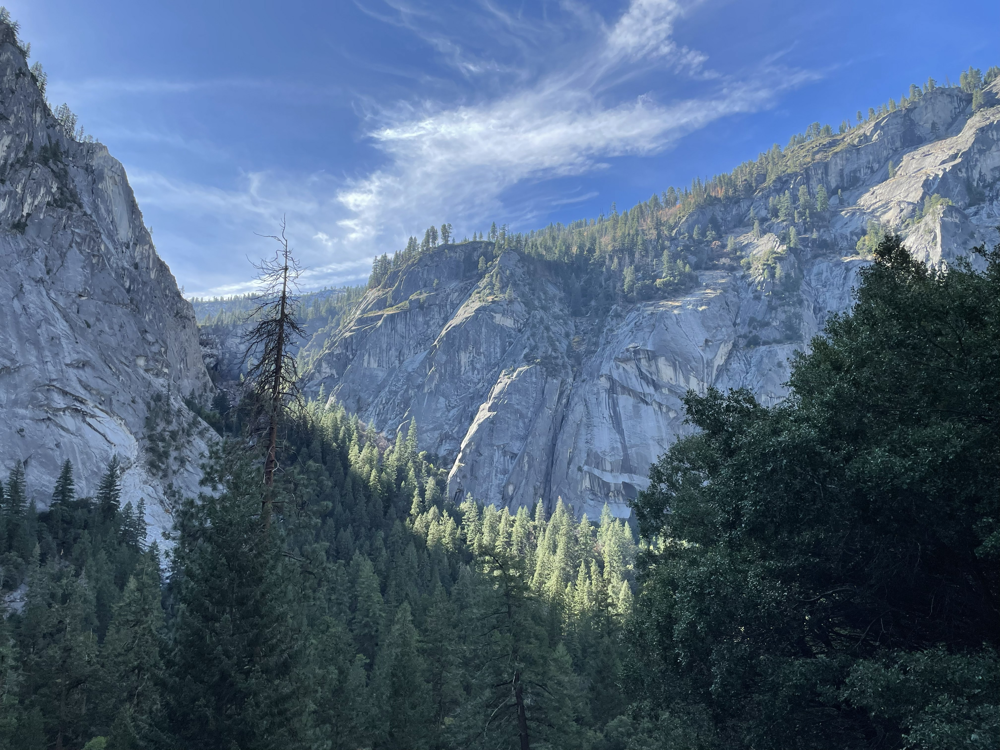
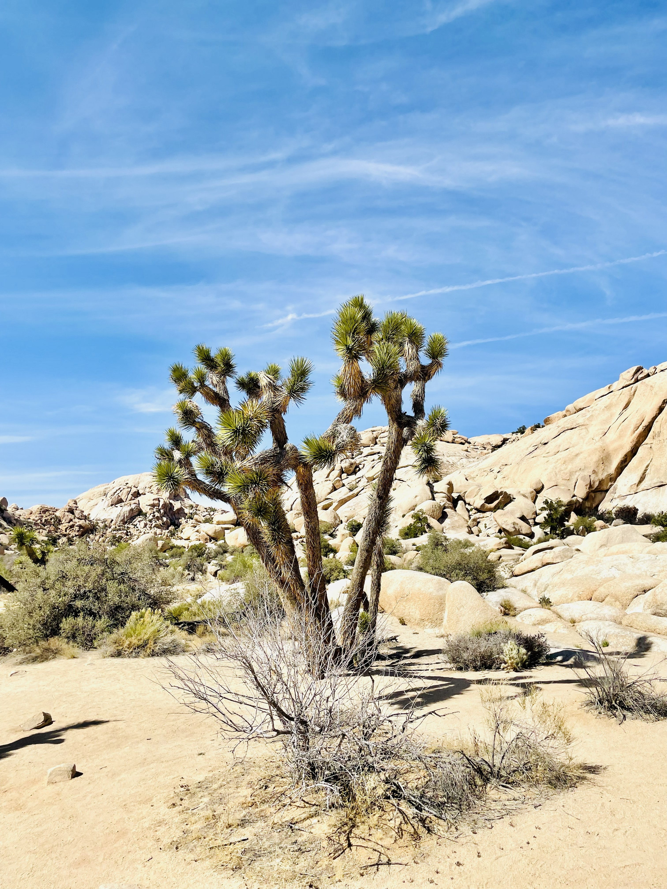
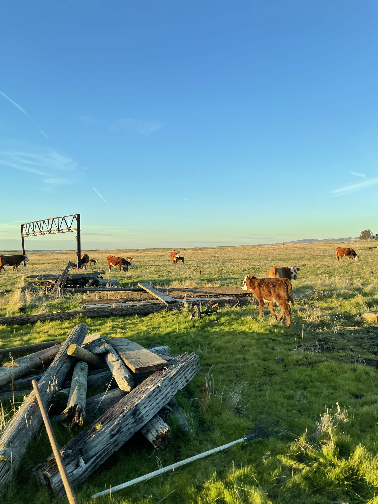

Places I've Visited
A small interactive map of a few places I like to visit. Click markers for details. I'll add more locations over time.
North America
- • San Francisco
- • Yosemite
- • Joshua Tree
- • Grand Canyon
- • Sedona
- • New York
- • Boston
- • Orlando
- • Cancun, Mexico
- • Cabo San Lucas, Mexico
- • Jamaica
- • Victoria, Canada
Europe
- • Seville, Spain
- • Barcelona, Spain
- • Paris, France
- • London, UK
- • Rome, Italy
- • Florence, Italy
- • Cinque Terre, Italy
- • Naples, Italy
Asia
- • Hangzhou, China
- • Beijing, China
- • Shanghai, China
Pacific
- • Kauai, Hawaii
- • Honolulu, Hawaii
- • Maui, Hawaii
- • Hawaii Island, Hawaii
Middle East
- • Dubai, UAE
Who I Am
Hi, I'm Dylan Kwok, a high school student from Fremont, California. I speak English and Spanish, and I come from a half Indian, half Chinese background, so I've grown up living in three cultures at once: both sides of my parents' families, and the American ideals I was raised around. That mix shapes how I see the world, how I travel, and how I connect with people.
I love history, building things, games, reading, and being outdoors. This page is a window into what drives me—my background, my interests, and the things that make life meaningful.
My Passions
Aerospace Engineering
High-power rocketry has become a defining passion. I've led teams through competition cycles, designed modular rocket systems, and worked toward rocketry certifications. There's something magical about launching something you've designed and built from concept to reality. The challenge of solving complex engineering problems at the intersection of physics, materials science, and precision manufacturing fascinates me.
Travel & History
I love traveling and learning the history behind the places I visit. Seeing how different places developed over time makes each trip more meaningful, whether I'm walking through a city, exploring a landmark, or just paying attention to the details around me.
Making Since Childhood
I've been building things since I was four, starting with LEGO sets and robotics. That habit never really stopped. I still like turning ideas into something real, whether it's a model, a project, or a system that solves a problem.
Games & Reading
I love video games like Kerbal Space Program, Minecraft, Super Auto Pets, and Trackmania. I also enjoy board games like Catan, Risk, and 7 Wonders. On top of that, I'm an avid reader and especially like fantasy and sci-fi, including Harry Potter, Ready Player One, The Martian, Percy Jackson, and Wings of Fire.
My Philosophy
Learning is lifelong. Every project, failure, and success teaches me something new. I believe in approaching challenges with curiosity rather than fear.
Persistence pays off. The most meaningful accomplishments come from pushing through difficulties and not giving up when things get hard.
Failure is feedback. I don't see failure as the end—it's data that helps me improve. Some of my best ideas came after things didn't work the first time.
Build for impact. I'm driven to create things that matter—whether that's a rocket, a mentoring program, or a photograph that changes how someone sees the world.
Share what you know. Knowledge multiplies when shared. I'm committed to lifting others up and making STEM more accessible and exciting.
My Life Goals
- → Pursue aerospace or mechanical engineering at a top university and eventually work on problems that advance human spaceflight or sustainable technology
- → Make STEM education more accessible to students from underrepresented backgrounds and show them that they belong in engineering
- → Build meaningful projects that solve real problems and leave a lasting positive impact on the world
- → Travel and experience different cultures while sharing stories through photography and writing
- → Be a mentor and leader who helps others discover their potential and builds strong communities around shared interests
Hobbies & Interests
Active Hobbies
- • Running and hiking
- • Exploring the outdoors
- • Traveling to new places
- • Building with LEGO, robotics, and hands-on projects
- • Photography and observing the world around me
Creative & Intellectual Pursuits
- • Video games: Kerbal Space Program, Minecraft, Super Auto Pets, Trackmania
- • Board games: Catan, Risk, and 7 Wonders
- • Reading fantasy and sci-fi
- • Learning history and different cultures
- • Thinking through ideas and projects from concept to reality
Family & Background
I'm incredibly grateful for my family's support in everything I do. Being half Indian and half Chinese means I get to learn from both sides of my family while also growing up with American ideals and perspectives. That blend has shaped how I think about identity, tradition, and opportunity.
My family's emphasis on education, hard work, and curiosity has shaped who I am today. Being bilingual in English and Spanish has also helped me connect with more people and appreciate different cultures wherever I go.